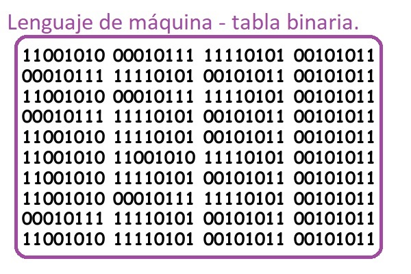
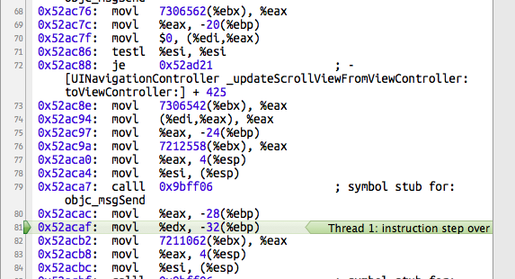
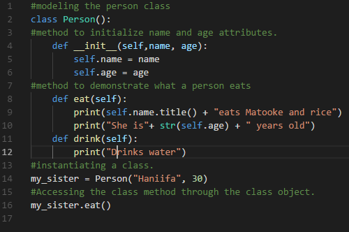

Tarea 2
Clasificación de los Lenguajes Informáticos
Existen varios tipos de lengaujes informáticos que se fueron creando conforme avanzó la tecnología. Cabe mencionar que esta clasificación se basa tanto en el lenguaje primitivo de una computadora, y continúa hasta los de hoy en día.
Lenguaje Máquina
Es el lenguaje de programación que entiende directamente la computadora. Este lenguaje de programación utiliza el sistema binario, es decir utiliza los dígitos binarios 0 y 1.
Este lenguaje es muy complejo de entender para nosotros, por lo que se tuvo la necesidad de hacer otro tipo de lenguaje que el ser humano sea capaz de entenderlo un poco mejor.
Lenguaje Ensamblador
Son mucho más fáciles de utilizar que el lenguaje máquina, pero dependen mucho de la computadora. En esta categoría se encuentra el lenguaje ensamblador basado en Nemotécnicos (palabras de tres letras en inglés que son fáciles de recordar).
Lenguaje de alto nivel
Estos lenguajes son muy conocidos en la actualidad, puesto son los que generalmente usamos a la hora de programar. Son muy similares al lenguaje humano, pero precisan de un programa intérprete o compilador que traduzca este lenguaje de programación de alto nivel (programa fuente) a uno de bajo nivel (programa objeto) de tal forma que es más fácil de interpretar y ejecutar por la computadora.
En esta categoría se encuentran los programas Cobol, Pascal, C, C++, Java, Ruby entre muchos otros, aunque a los tres últimos otros autores lo clasifican dentro de la programación orientada a objetos.
